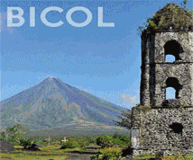

Login
Home
Trips/Fares
Customer Service
About Us
GB Express Route Map
Baguio, officially the City of Baguio and often referred to as Baguio City, is a highly urbanized city located in the province of Benguet in northern Luzon island of the Philippines.
Manila's moniker, the 'Pearl of the Orient', couldn't be more apt, its cantankerous shell reveals its jewel only to those resolute enough to pry. No stranger to hardship, the city has endured every disaster both human and nature could throw at it, and yet today the chaotic metropolis thrives as a true Asian megacity.
BATANGAS is endowed with destinations encompassing various natures from natural to man-made, from preserved greatness of the bygone era to modernistic structures, from places where you can seek refuge to sites where one can be lavished with paramount Epicurean treat.
"Bicolandia" is made up the provinces of Camarines Norte, Camarines Sur, Albay, Sorsogon, Catanduanes and Masbate. You can find it at the southern tip of the island of Luzon. Bicol is one of the Philippines' best-known tourist destinations.